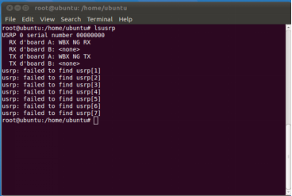
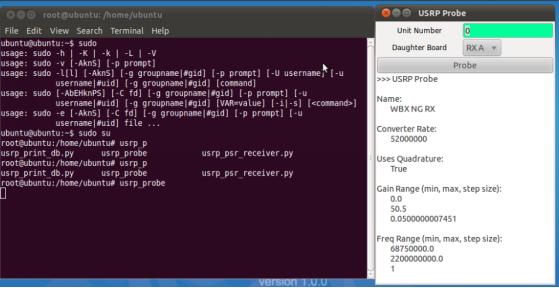
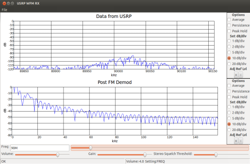
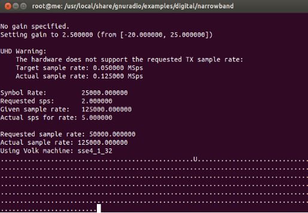
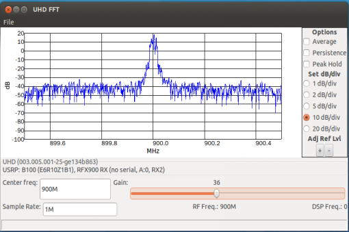
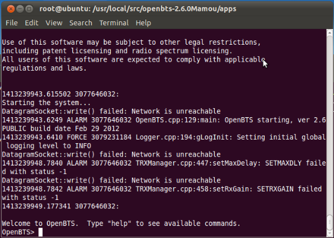

WBX测试文档（主板使用USRP1）
软件要求：
OpenBTS_2.6(52M)镜像（或者OpenBTS_2.6(64M)镜像）
硬件要求：
一台PC机，一个USRP1主板，一块WBX子板,两个900~1800MHz的天线
两根馈线，一个6V电源，一根usb线。
测试步骤：
1、烧写wbx子板（使用USRP1+wbx与PC机相连）
注意：如果wbx子板原来以前烧写过，这步就不用操作了
打开终端root用户下:
将wbx_usrp1_burn.sh复制到任意目录下
chmod 777 wbx_usrp1_burn.sh (更改权限)
./wbx_usrp1_burn.sh (运行脚本文件)
2、查看电脑是否识别WBX子板
root用户下输入命令：lsusrp

3、测试 wbx程序是否烧写好
打开终端root用户下输入命令：
usrp_probe
出现图-1表示wbx程序烧写好了

图-1
4、测试接收FM广播（使用WBX子板）
打开终端root用户下输入命令：
cd /usr/local/share/gnuradio/examples/usrp
./usrp_wfm_rcv_pll.py
出现图-2调节接收频率按钮可接收到FM广播

图-2
5、测试信号的发射与接收(以900MHz和1800MHz的信号为实例)
1） 测试发射900M信号
打开终端root用户下输入命令：
cd /usr/local/share/gnuradio/examples/digital/
./benchmark_tx.py –f 900M –T A
出现图-3表示是成功发射,使用频谱仪接收所发射的信号

图-3
2）测试接收900MHz的信号（另一台电脑发射一个900MHz的信号）
打开终端超级用户下输入命令：
usrp_fft.py –f 900M –R A (任意目录下)
出现图-4表示接收到信号

图-4
3)测试1800MHz的信号（将测900MHz命令里的“900M”改成“1800M”就可以了）
6、基站测试（选用USRP1+WBX）
打开终端超级用户下输入命令：
注意：基站号是07，所以使用07的sim卡。
asterisk
cd /usr/local/src/openbts-2.6.0Mamou/apps/
./OpenBTS
出现图-5，用两部测试手机测试通话

图-5